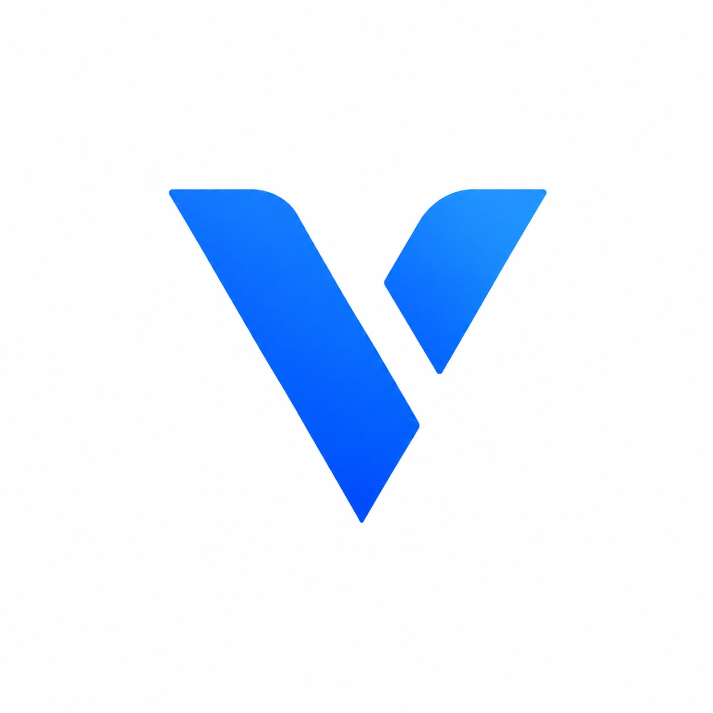

Uma ideia. Uma marca. Um começo.Venix
Landing page · Marca própriaDar forma à minha marca de desenvolvimento web, com uma presença clara e focada nos seus serviços.
O desafio e a solução
- Desafio
- Apresentar uma nova marca e os seus serviços no digital.
- O que fiz
- Design e desenvolvimento de uma landing page responsiva, com apresentação da marca e caminhos de contacto.
- Tecnologias
- HTML · CSS · JavaScript